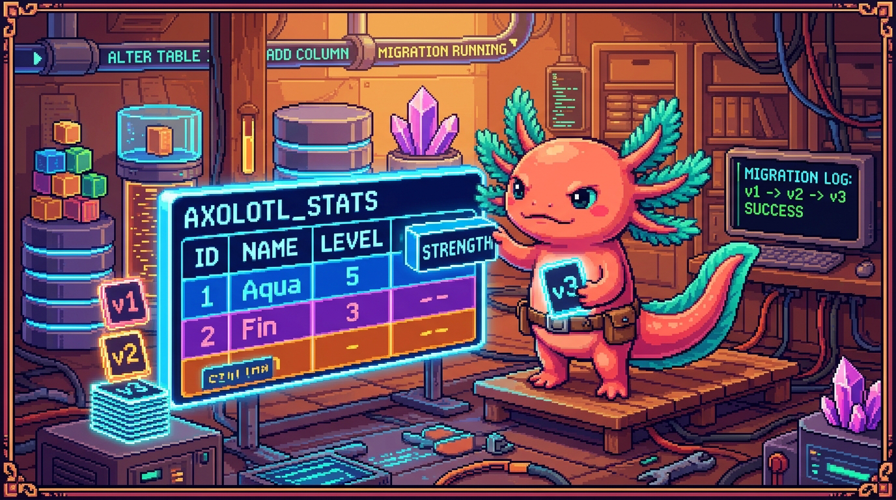

Capitulo 13 — Migraciones y cambios de esquema

Hola, soy Bit, tu ajolote acompanante. Los ajolotes tenemos una rareza preciosa: nos regenera el cuerpo sin morir en el intento. Hoy vas a aprender a hacer algo parecido con tus tablas: cambiarlas, hacerlas crecer y repararlas sin perder datos y sin romper la app. A ese cambio cuidadoso se le llama migracion, y te aseguro que es una de las habilidades que mas te van a tranquilizar como programador. Respira, que vamos despacio.
Hasta ahora pensabas tus tablas como si fueran eternas: creas habitos, creas proyectos, y ya. Pero un programa que esta vivo cambia. Un dia quieres anadirle un color a cada habito. Otro dia descubres que un campo deberia guardar un numero y no texto. Otro dia eliminas una columna que ya nadie mira. Cada uno de esos cambios trae un riesgo: si lo haces mal, puedes perder informacion de gente real o dejar la aplicacion sin arrancar. Aqui vas a aprender a hacerlo con red debajo.
1. Que es una migracion
Imagina una casa habitada (tu base de datos, con datos reales dentro) a la que quieres anadirle una habitacion. No puedes demolerla y levantar otra: hay gente viviendo ahi. Lo que haces es una reforma controlada, paso a paso, cuidando que no se venga abajo el techo. Una migracion en bases de datos es exactamente eso.
🟦 ¿Que significa? — Migracion (migration)
Una migracion es un cambio versionado y guardado en la estructura de tu base de datos: anadir una tabla, anadir una columna, cambiar un tipo de dato, crear un indice... Lo importante es que queda escrito en un archivo, con un orden, de modo que el mismo cambio se puede repetir en cualquier entorno (tu maquina, el servidor de pruebas, produccion) y siempre da el mismo resultado. Para que sirve: para que el esquema de la base de datos evolucione de forma ordenada y reproducible, sin que cada persona del equipo ande cambiando tablas a mano. Donde se usa en un repo real: en Faro/Organizer y en RachaSimple, que usan Supabase (Postgres). Supabase guarda las migraciones en una carpeta
supabase/migrations/, y cada archivo es un cambio con fecha en el nombre, por ejemplo20260101120000_crear_tabla_proyectos.sql.
Lo que separa una migracion de un cambio "a mano" es esa palabra: versionado. Si entras al panel de Supabase y agregas una columna con un clic, el cambio sucede, pero nadie sabe quien lo hizo, ni cuando, ni como repetirlo. Una migracion, en cambio, es un archivo .sql que vive en tu repositorio, al lado del codigo.
🟦 ¿Que significa? — Esquema (schema)
El esquema es la forma de tu base de datos: que tablas existen, que columnas tiene cada una, de que tipo es cada columna y que reglas las conectan. No son los datos, sino el "molde" donde caben los datos. Para que sirve: define la estructura. Si los datos son el agua, el esquema es el vaso. Donde se usa en un repo real: el esquema de RachaSimple incluye tablas como
habitos,registros_rachayperfiles; el de Faro incluyeproyectos,fasesyuser_connections.💡 Tip
Piensa en una migracion como en un commit de Git, pero para la estructura de la base de datos. Igual que Git guarda la historia de tu codigo, las migraciones guardan la historia de tu esquema. De hecho viven en el mismo repositorio y viajan en el mismo PR.
Y los proyectos que NO tienen base de datos?
No todo proyecto necesita migraciones. Conviene mirar los que no las usan para entender por que.
🔎 En tu codigo
PolyPaw guarda sus datos en archivos JSON (Python/Flet), no en una base de datos relacional. Cuando quieres "anadir un campo" a una mascota en PolyPaw, basta con que empieces a escribir esa clave nueva en el JSON. No hay
ALTER TABLE, no hay migracion formal. Suena comodisimo, pero se paga: si la mitad de tus archivos JSON viejos no tienen la clave nueva, tu codigo Python tiene que acordarse de comprobar "y si no existe?" en cada lectura. En un Postgres bien migrado, en cambio, todas las filas comparten la misma forma. tunal-digital (HTML/CSS/JS vanilla) ni siquiera guarda datos persistentes de usuario, asi que el tema de migraciones ni lo roza. Y polypaw-nas (Ubuntu/Samba/Cockpit) administra archivos en disco, que es otro mundo. Las migraciones son cosa de RachaSimple y Faro, que si tienen Postgres.
2. ALTER TABLE: cambiar una tabla que ya existe
El comando estrella de las migraciones es ALTER TABLE. Sirve para modificar una tabla sin volver a crearla, conservando los datos que ya tiene dentro.
🟦 ¿Que significa? — ALTER TABLE
Es la instruccion SQL que modifica la estructura de una tabla que ya existe: anadir columnas, quitarlas, cambiarles el tipo, renombrarlas o ponerles restricciones. La tabla y sus filas siguen ahi; lo unico que cambia es su forma. Para que sirve: evolucionar una tabla en produccion sin tener que borrarla (y perder los datos). Donde se usa en un repo real: cada vez que RachaSimple o Faro necesitan un campo nuevo, la migracion correspondiente lleva dentro un
ALTER TABLE.
Anadir una columna
Supongamos que en RachaSimple queremos que cada habito tenga un color, para mostrarlo en la interfaz. La tabla habitos ya existe y tiene habitos de usuarios reales. Anadimos la columna asi:
ALTER TABLE habitos
ADD COLUMN color text NOT NULL DEFAULT '#22c55e';
Leamoslo despacio, que cada pieza cuenta:
🟦 ¿Que significa? — Columna (column)
Una columna es un dato concreto que guardas para cada fila de la tabla. En
habitos, columnas tipicas sonid,nombre,user_idy ahoracolor. Cada fila (cada habito) tiene su propio valor para cada columna. Para que sirve: organizar la informacion en campos con nombre y tipo. Donde se usa en un repo real: la tablaproyectosde Faro tiene columnas comonombre,descripcion,estadoyprogreso.🟦 ¿Que significa? — DEFAULT (valor por defecto)
Es el valor que la base de datos coloca sola cuando tu no le das uno. En el ejemplo,
DEFAULT '#22c55e'quiere decir: si no especifico color, que sea verde. Para que sirve: rellenar con algo razonable las filas que ya existian (que no traian color) y las nuevas que tampoco lo manden. Donde se usa en un repo real: en Faro, la columnaprogresodeproyectospuede llevarDEFAULT 0, para que un proyecto recien creado arranque en 0%.⚠️ Cuidado
Cuando anades una columna
NOT NULL(obligatoria) a una tabla que ya tiene filas dentro, tienes que darle unDEFAULT. Si no, Postgres no sabe que poner en las filas viejas y la migracion revienta con un error tipo "column contains null values". La regla es facil de recordar: si la tabla ya tiene datos,NOT NULLviene siempre acompanado deDEFAULT.🟦 ¿Que significa? — NOT NULL
Es una restriccion que obliga a que una columna nunca quede vacia. Si intentas guardar una fila sin ese valor, la base de datos la rechaza. Para que sirve: asegurar que ciertos datos imprescindibles siempre esten presentes (un habito sin
user_idno tendria ningun sentido). Donde se usa en un repo real: en RachaSimple, la columnauser_iddehabitosesNOT NULL, porque un habito siempre pertenece a alguien.
Quitar una columna
Imagina que en Faro tuvimos una columna notas_internas en proyectos que ya nadie usa. La quitamos asi:
ALTER TABLE proyectos
DROP COLUMN notas_internas;
🟦 ¿Que significa? — DROP COLUMN
Es la instruccion que elimina una columna de una tabla, junto con todos los datos que esa columna guardaba. Para que sirve: limpiar el esquema de campos que ya no se usan. Donde se usa en un repo real: se usaria en Faro al retirar un campo experimental de
proyectosque dejo de aportar.⚠️ Cuidado
DROP COLUMNborra los datos de esa columna para siempre. No hay papelera de reciclaje. Antes de soltar una columna en produccion, hazte dos preguntas: alguna parte de la app todavia la lee? hay una copia de seguridad? Bit ha visto a ajolotes valientes perder un brazo justo aqui. Mide dos veces, corta una sola.
Cambiar el tipo de una columna
A veces caes en la cuenta de que un dato esta guardado con el tipo equivocado.
🟦 ¿Que significa? — Tipo de dato (data type)
Es la clase de informacion que una columna puede guardar:
text(texto),integer(numero entero),boolean(verdadero/falso),timestamptz(fecha y hora con zona horaria),uuid(identificador unico), etc. El tipo decide que valores son validos y cuanto ocupan. Para que sirve: garantizar que cada columna guarde solo datos coherentes (no puedes meter la palabra "hola" en una columnainteger). Donde se usa en un repo real: en RachaSimple,registros_rachausadatepara el dia del registro ybooleanpara si se cumplio; en Faro,proyectos.creado_enestimestamptz.
Pongamos que en Faro guardamos progreso como text ("75") por error, y queremos que sea un numero entero:
ALTER TABLE proyectos
ALTER COLUMN progreso TYPE integer
USING progreso::integer;
🟦 ¿Que significa? — Cast / USING (
::)Un cast es una conversion de un tipo a otro. La clausula
USING progreso::integerle explica a Postgres como transformar el texto que ya esta guardado en numeros mientras cambia el tipo. El::es el operador de cast de Postgres. Para que sirve: pasar al nuevo tipo los datos que ya tienes guardados, sin perderlos por el camino. Donde se usa en un repo real: haria falta en Faro si un campo numerico se hubiera creado por error como texto.⚠️ Cuidado
Cambiar el tipo de una columna es de las migraciones mas delicadas. Si tienes un texto como "setenta y cinco" intentando convertirse en
integer, la conversion explota. Antes de tocar un tipo, revisa que todos los datos existentes se puedan convertir. En produccion esto se prueba primero en otro entorno (lo vemos en la seccion 6).💡 Tip
Renombrar tambien es
ALTER TABLE:ALTER TABLE habitos RENAME COLUMN color TO color_hex;. Renombrar no pierde datos, pero si rompe el codigo que sigue buscando el nombre viejo. Cambia la columna y el codigo en el mismo PR.
Crear un indice
Otro cambio de esquema muy frecuente, que tambien viaja como migracion, es crear un indice.
🟦 ¿Que significa? — Indice (index)
Un indice es una estructura auxiliar que la base de datos mantiene para encontrar filas mas rapido. Funciona como el indice alfabetico del final de un libro: en lugar de leer pagina por pagina, saltas directo a lo que buscas. Se crea con
CREATE INDEXsobre una o varias columnas. Para que sirve: acelerar las consultas que filtran u ordenan por esa columna. Sin indice, la base recorre toda la tabla; con indice, va directa al grano. Donde se usa en un repo real: en RachaSimple, un indice sobreregistros_racha(habito_id, fecha)hace rapido pintar la racha de un habito; en Faro, un indice sobreproyectos(user_id)agiliza listar los proyectos de cada usuario.
-- Crear un indice para acelerar las consultas por habito y fecha.
CREATE INDEX idx_registros_habito_fecha
ON registros_racha (habito_id, fecha);
💡 Tip
Crear un indice no cambia ni borra datos: solo agrega una "ayuda de busqueda". Por eso es una migracion segura. Aun asi, en tablas enormes puede tardar; en produccion conviene crearlos cuando hay poco trafico.
3. Versionar el esquema: la carpeta de migraciones
Ya sabes que cambios hacer. Ahora viene el habito que te salva la vida: guardarlos en orden.
🟦 ¿Que significa? — Versionar el esquema
Es guardar cada cambio del esquema como un archivo numerado o fechado, en orden cronologico, dentro del repositorio. Asi cualquiera puede reconstruir la base de datos aplicando las migraciones una tras otra, de la primera a la ultima. Para que sirve: que el estado de la base de datos sea reproducible y auditable; que un companero nuevo levante una base identica a la tuya solo corriendo las migraciones. Donde se usa en un repo real: Faro y RachaSimple guardan sus migraciones en
supabase/migrations/, con nombres como20260115093000_add_color_a_habitos.sql.
El nombre de cada archivo arranca con una marca de tiempo (ano-mes-dia-hora-minuto-segundo). Eso fija el orden: las migraciones se aplican de la mas antigua a la mas reciente, siempre en la misma secuencia. Por eso dos personas distintas que las corran terminan con exactamente el mismo esquema.
🟦 ¿Que significa? — Aplicar una migracion
Es ejecutar el SQL de un archivo de migracion contra una base de datos concreta. Supabase lleva la cuenta de cuales ya aplico (en una tabla interna), asi que no las repite. Para que sirve: llevar una base "atrasada" hasta el ultimo estado del esquema, ejecutando solo las migraciones que le faltan. Donde se usa en un repo real: en Faro, al desplegar, las migraciones nuevas se aplican sobre la base de produccion.
Con el cliente de Supabase, cuando tu codigo TypeScript consulta una tabla, da por sentado que el esquema ya esta migrado. Por ejemplo, en RachaSimple (que usa TanStack Query para pedir datos):
// RachaSimple: leer los habitos del usuario actual.
// Esto asume que la columna 'color' YA existe (la migracion ya corrio).
const { data: habitos } = await supabase
.from("habitos")
.select("id, nombre, color")
.order("creado_en", { ascending: true });
⚠️ Cuidado
Si tu codigo TypeScript pide
colorpero la migracion que crea esa columna todavia no se aplico en ese entorno, la consulta falla. De ahi la regla de oro: la migracion va antes (o junto) al codigo que la usa, nunca despues. Primero existe la columna, despues la pides.🟦 ¿Que significa? — SELECT
Es la instruccion SQL que lee filas de una tabla, sin tocarlas. Le dices que columnas quieres (
SELECT id, nombre, color) y de que tabla, y la base te devuelve los datos que cumplen tus condiciones. Es la operacion mas comun de todas: consultar. Para que sirve: recuperar informacion para mostrarla o procesarla. Tambien sirve para comprobar que una migracion hizo lo que esperabas (por ejemplo, leer una columna recien anadida y ver que las filas viejas quedaron con elDEFAULT). Donde se usa en un repo real: en RachaSimple,supabase.from("habitos").select("id, nombre, color")es por debajo unSELECT; en Faro, cada vez que la app lista losproyectosdel usuario hace unSELECT.🟦 ¿Que significa? — Cliente de Supabase (Supabase client)
Es la libreria de JavaScript/TypeScript que tu app usa para hablar con la base de datos sin escribir SQL a mano.
supabase.from("habitos").select(...)se traduce por dentro a una consulta SQL. Para que sirve: consultar y modificar datos desde el frontend o el backend de forma comoda y segura. Donde se usa en un repo real: en RachaSimple (combinado con TanStack Query para cachear) y en Faro (Next.js, normalmente desde el servidor para proteger las llaves).
4. No perder datos: el corazon del asunto
Toda esta disciplina existe por una razon, y solo una: no perder informacion de personas reales. Cuando una racha de 200 dias desaparece por una migracion descuidada, no es un bug abstracto; es la motivacion de alguien tirada a la basura.
🟦 ¿Que significa? — Migracion destructiva
Es cualquier cambio que puede borrar datos:
DROP COLUMN,DROP TABLE, cambiar un tipo de forma que no convierta bien, o anadir unNOT NULLsinDEFAULTa una tabla con filas. "Destructiva" no quiere decir prohibida; quiere decir que pide cuidado extra. Para que sirve: etiquetar en tu cabeza los cambios peligrosos para tratarlos con respeto. Donde se usa en un repo real: retirar la tablanotas_internasde Faro seria una migracion destructiva.
Algunas estrategias para no perder datos:
-
Anade antes de borrar. Si quieres reemplazar la columna
nombreportitulo, primero anadestitulo, copias los datos, actualizas el codigo, y solo despues (en otra migracion, otro dia) borrasnombre. A esto se le llama migracion en dos fases o expand/contract. -
Usa
DEFAULTpara las columnas obligatorias nuevas, como vimos en la seccion 2. -
Haz copia de seguridad antes de tocar produccion. Supabase guarda backups automaticos; aun asi, antes de un
DROP, confirma que existe uno reciente.
-- Fase 1 (hoy): anadir la columna nueva y copiar datos.
ALTER TABLE proyectos ADD COLUMN titulo text;
UPDATE proyectos SET titulo = nombre WHERE titulo IS NULL;
-- ...se actualiza el codigo para usar 'titulo'...
-- Fase 2 (otro dia, ya seguros): retirar la vieja.
ALTER TABLE proyectos DROP COLUMN nombre;
🟦 ¿Que significa? — UPDATE (en migraciones)
UPDATEmodifica los datos existentes (no la estructura). Dentro de una migracion se usa para rellenar o transformar valores: copiar de una columna a otra, normalizar formatos, ese tipo de cosas. Para que sirve: mover o ajustar datos que ya estan guardados, como parte del cambio de esquema. Donde se usa en un repo real: en Faro, al copiarnombrehacia el nuevotituloantes de eliminar el campo viejo.💡 Tip
Separar "anadir" y "borrar" en migraciones de dias distintos te regala una red enorme: si algo sale mal despues de anadir, la columna vieja sigue ahi para volver atras. La prisa es la principal causa de datos perdidos.
🔎 En tu codigo
En RachaSimple, las tablas
habitos,registros_rachayperfilesestan protegidas con RLS (Row Level Security): cada usuario solo ve sus propias filas. Cuando anades una columna nueva con una migracion, las politicas de RLS que ya existen siguen funcionando sobre la tabla; no se borran. Pero si tu columna nueva necesita su propia regla de acceso, tendras que anadir o ajustar la politica en la misma migracion. Olvidarlo es un clasico: anades la columna, la app la pide, y RLS la bloquea o, peor, la deja demasiado abierta.🟦 ¿Que significa? — RLS (Row Level Security)
Es un mecanismo de Postgres que filtra que filas puede ver o tocar cada usuario, segun reglas (politicas) que tu defines. Por ejemplo: "un usuario solo lee los habitos donde
user_ides el suyo". Para que sirve: seguridad de datos. Que nadie acceda a la informacion de otra persona, ni siquiera si la app tuviera un bug. Donde se usa en un repo real: en RachaSimple (habitos, registros, perfiles) y en Faro (proyectos,fases,user_connections, donde ademas viven tokens sensibles que jamas deben filtrarse).
5. Seeds: datos de ejemplo para trabajar comodo
Una base de datos recien migrada esta vacia: tiene la forma correcta pero ni una sola fila. Para desarrollar a gusto necesitas datos de mentira con los que probar.
🟦 ¿Que significa? — Seed (datos semilla)
Un seed es un conjunto de datos de ejemplo que insertas en una base recien creada para no trabajar sobre tablas vacias. Suelen ser unos cuantos
INSERTque crean usuarios falsos, habitos de prueba, proyectos de muestra y demas. Para que sirve: ver la app funcionando con contenido realista mientras desarrollas, sin tener que crear todo a mano cada vez. Donde se usa en un repo real: en RachaSimple, un seed podria crear un par de habitos con varios dias de racha para ver la pantalla "con vida"; en Faro, unos proyectos de ejemplo con sus fases.
-- Seed de ejemplo para RachaSimple (datos de mentira, solo para desarrollo).
INSERT INTO habitos (id, user_id, nombre, color) VALUES
('11111111-1111-1111-1111-111111111111',
'00000000-0000-0000-0000-000000000000', 'Beber agua', '#3b82f6'),
('22222222-2222-2222-2222-222222222222',
'00000000-0000-0000-0000-000000000000', 'Leer 10 min', '#a855f7');
INSERT INTO registros_racha (habito_id, fecha, cumplido) VALUES
('11111111-1111-1111-1111-111111111111', '2026-06-24', true),
('11111111-1111-1111-1111-111111111111', '2026-06-25', true);
🟦 ¿Que significa? — INSERT
Es la instruccion SQL que anade filas nuevas a una tabla. Cada
INSERTmete uno o varios registros. Para que sirve: crear datos, ya sea de verdad (cuando un usuario usa la app) o de ejemplo (en un seed). Donde se usa en un repo real: cada vez que en Faro se crea un proyecto, por debajo ocurre unINSERTen la tablaproyectos.⚠️ Cuidado
Los seeds son solo para desarrollo y pruebas. Nunca corras un seed contra produccion: meterias usuarios falsos y proyectos de mentira en la base donde viven los datos reales de la gente. Por eso los seeds suelen ir en un archivo aparte (
supabase/seed.sql) y no se aplican solos al desplegar.🔎 En tu codigo
Aqui PolyPaw vuelve a servir de contraste: como sus datos viven en archivos JSON, su "seed" es, literalmente, un archivo JSON de ejemplo que el programa lee al arrancar. No hay
INSERTni tablas; solo un fichero con mascotas de muestra. Es mas simple para empezar, pero no escala igual que un Postgres con seeds versionados.
6. Entornos: desarrollo vs produccion
Una pregunta sale sola: donde pruebo todo esto sin miedo? La respuesta son los entornos.
🟦 ¿Que significa? — Entorno (environment)
Un entorno es una copia independiente de tu sistema (base de datos incluida) pensada para un uso concreto. Los dos clasicos son desarrollo (donde experimentas y puedes romper cosas) y produccion (la que usan las personas reales, donde nada puede romperse). Para que sirve: probar cambios peligrosos en un lugar seguro antes de aplicarlos donde de verdad importa. Donde se usa en un repo real: Faro y RachaSimple tienen una base de desarrollo (o un proyecto Supabase de pruebas) separada de la de produccion.
🟦 ¿Que significa? — Produccion (production)
Es el entorno real y en vivo, el que usan los usuarios de verdad, con sus datos de verdad. Un error aqui afecta a personas. Para que sirve: servir la aplicacion al mundo. Es sagrado: se toca con cuidado y siempre despues de haber probado en desarrollo. Donde se usa en un repo real: la Faro que el dueno del proyecto usa a diario corre en produccion (Next.js desplegado, con su Supabase de produccion).
El flujo seguro es siempre el mismo:
- Escribes la migracion y la pruebas en desarrollo. Si rompe algo, no pasa nada: ahi no hay datos reales.
- Verificas que la app sigue funcionando con el esquema nuevo (en Faro, recuerda la regla del repo:
npm run builddebe pasar). - Recien entonces aplicas la migracion en produccion, idealmente con un backup reciente a mano.
🟦 ¿Que significa? — Variables de entorno (environment variables)
Son valores de configuracion que cambian segun el entorno, como la direccion y las llaves de la base de datos. La misma app, en desarrollo, apunta a una base; en produccion, a otra, gracias a estas variables. Para que sirve: que un mismo codigo se conecte a la base correcta sin cambiar el codigo, solo la configuracion. Y que las llaves secretas no queden escritas dentro del codigo. Donde se usa en un repo real: Faro guarda en variables de entorno la URL de Supabase, las llaves y la clave de OpenAI; segun el CLAUDE.md del repo, los tokens y secretos viven solo en el servidor, nunca en el cliente ni commiteados.
⚠️ Cuidado
Jamas pongas tus llaves de produccion en el codigo ni las subas a Git. En Faro, las claves de Supabase y OpenAI, y los tokens de
user_connections, solo viven en variables de entorno del servidor y protegidos por RLS. Una llave filtrada en un commit es un incidente de seguridad de verdad, no una anecdota.💡 Tip
Algunas plataformas (Supabase entre ellas) ofrecen "ramas" o entornos de preview que crean una copia temporal de la base para probar una rama de Git. Es como un entorno de desarrollo desechable por cada PR. Cuando lo tengas disponible, usalo: pruebas la migracion en un clon y la fusionas con confianza.
🔎 En tu codigo
Recuerda la regla del repo Faro: cualquier cambio funcional (incluida una migracion que toca el esquema o las variables de entorno) debe actualizar el
README.mden el mismo PR, y en español. Si tu migracion anade una columna que la app expone, o cambia una variable de entorno necesaria, el README tiene que reflejarlo. Una migracion sin su nota en el README es una migracion a medias.
✅ Checklist — ¿ya domino esto?
- [ ] Puedo explicar con mis palabras que es una migracion y por que se versiona.
- [ ] Distingo entre el esquema (la forma) y los datos (el contenido).
- [ ] Se anadir una columna con
ALTER TABLE ... ADD COLUMN, incluyendoNOT NULLconDEFAULT. - [ ] Se quitar una columna con
DROP COLUMNy entiendo que borra datos para siempre. - [ ] Se cambiar el tipo de una columna con
ALTER COLUMN ... TYPE ... USING ...y por que es delicado. - [ ] Se que un indice acelera las consultas y que crearlo es una migracion segura (no toca los datos).
- [ ] Distingo
SELECT(leer) deINSERT/UPDATE/ALTER, y se usarSELECTpara comprobar una migracion. - [ ] Entiendo la estrategia de dos fases (anadir antes de borrar) para no perder datos.
- [ ] Se que es un seed y por que nunca se corre en produccion.
- [ ] Distingo desarrollo de produccion y se en que orden aplicar una migracion.
- [ ] Recuerdo que en Faro toda migracion funcional actualiza el
README.mden el mismo PR. - [ ] Se que las migraciones no borran las politicas de RLS, pero que una columna nueva puede necesitar su propia regla.
🧪 Ejercicios
-
Sin computadora. Explica con tus propias palabras, a alguien que no sabe SQL, por que una migracion es mejor que cambiar la tabla a mano desde un panel. Usa la metafora de la casa habitada.
-
Sin computadora. Tienes la tabla
proyectosde Faro y quieres reemplazar la columnanombreportitulosin perder datos. Escribe en papel las dos fases (que migracion va hoy y cual otro dia) y explica por que las separas. -
💻 En el editor SQL de Supabase. Sobre una tabla de prueba
habitos, escribe y ejecuta unALTER TABLEque anada una columnacolor text NOT NULL DEFAULT '#22c55e'. Comprueba con unSELECTque las filas que ya existian quedaron con el color por defecto. -
💻 En el editor SQL de Supabase. Crea una columna
progreso texten una tabla de prueba, mete dos filas con valores'10'y'80', y luego conviertela aintegerconALTER COLUMN ... TYPE integer USING progreso::integer. Despues mete la palabra'mucho'en otra fila e intenta el cast de nuevo: observa el error y explica que aprendiste. -
💻 En el editor SQL de Supabase. Escribe un pequeño seed: dos
INSERTenhabitosy dos enregistros_racha(como el ejemplo del capitulo). Luego responde por escrito: por que este archivo nunca debe ejecutarse en produccion? -
Sin computadora. Para PolyPaw (datos en JSON) describe como anadirias un "campo nuevo" a las mascotas, y compara: que ventaja tiene Postgres con migraciones frente al enfoque de archivos JSON cuando ya tienes cientos de registros viejos?
Lo lograste. Ahora tus tablas pueden crecer, cambiar de forma y sanar sin perder ni una gota de datos, igual que un ajolote se regenera sin drama. La proxima vez que necesites un campo nuevo, ya no diras "y si lo rompo todo?", sino "voy a escribir una migracion, probarla en desarrollo y dejarla anotada en el README". Eso, pequeño humano, es trabajar como profesional. Nos vemos en el siguiente capitulo. — Bit 🐾